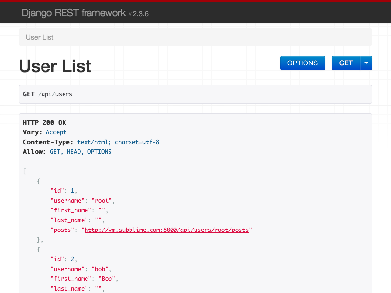
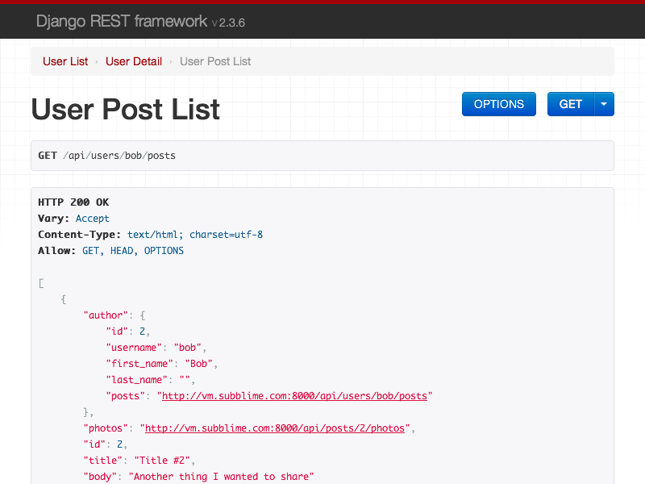
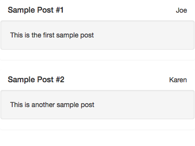
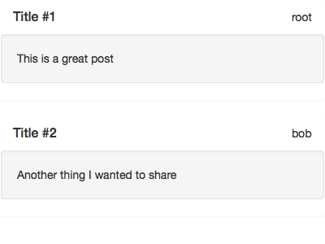
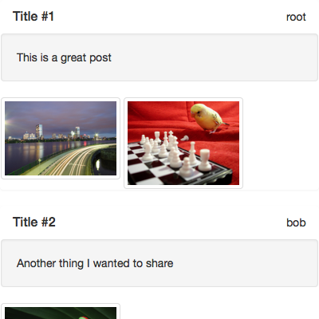
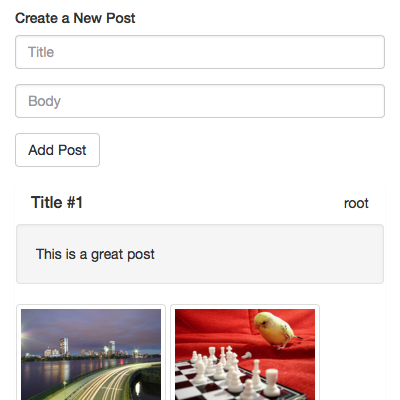
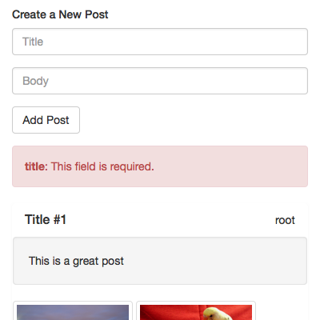
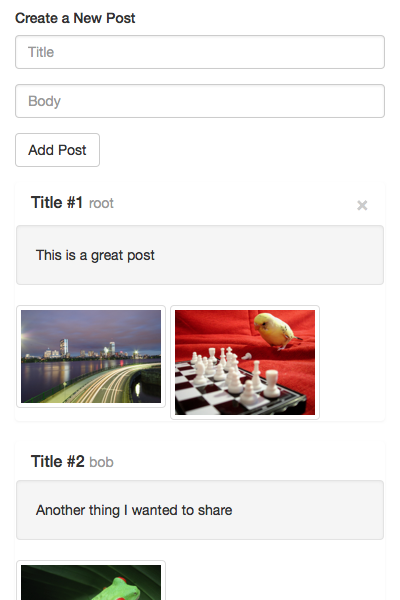

A ReSTful API is becoming a standard component of any modern web application. The Django Rest Framework is powerful framework for developing ReST endpoints for your Django based project. AngularJS is modern javascript framework for creating complex web applications within the browser. It focuses on strong separation of concerns (MVC) and dependency injection to encourage creating maintainable (and testable) modules that can be integrated to develop rich client side functionality.
In this blog post, I'll walk through creating a sample project that exposes a ReST API consumed by AngularJS on the client to showcase how to combine the frontend and backend frameworks to simplify creating complex applications. I'll make heavy use of code examples to demonstrate both the solution and the process and there's a companion Github project with all the code.
Let's Build a Sample Django Project
For a sample project, let's create a simple photo-sharing app (not unlike a rudimentary Instagram) and build a feed view for a given user to scan through all the photos shared on the site.
All the sample code for this project is available on a GitHub repository. To setup the sample project in your own environment, consult the installation instructions included in the repository. This includes installing AngularJS (and other javascript assets) via bower+grunt.
Finally, there's some sample data in fixtures available to demonstrate the API. We have a few users (['Bob', 'Sally', 'Joe', 'Rachel']), two posts (['This is a great post', 'Another thing I wanted to share']) and some sample photos as well. The included Makefile builds the sample data for you.
Couple notes about the sample code:
- I'll skip over the details on configuring, building and running the sample application. There's instructions in the repository that covers many of these details. Please report any issues on GitHub and I'll be sure to fix them.
- I've written the frontend code using Coffee-Script since I find it more legible and more efficient (and a bit more Pythonic). There's a supplied Grunt task that collects all the coffee script files and concats them into a single
script.jsfile for inclusion.
Project Data Layer (the Models)
Our model layer is straightforward to what you might find in an introductory tutorial for Django. You have three models of note: User, Post, and Photo. A user can author many posts (as well as have many followers) and a post can showcase many photos (such as a collection or gallery) along with a title and optional description/body.
from django.db import models
from django.contrib.auth.models import AbstractUser
class User(AbstractUser):
followers = models.ManyToManyField('self', related_name='followees', symmetrical=False)
class Post(models.Model):
author = models.ForeignKey(User, related_name='posts')
title = models.CharField(max_length=255)
body = models.TextField(blank=True, null=True)
class Photo(models.Model):
post = models.ForeignKey(Post, related_name='photos')
image = models.ImageField(upload_to="%Y/%m/%d")
Django Rest Framework based API
The Django Rest Framework (DRF) provides a clean architecture to develop both simple, turn-key API endpoints as well as more complex ReST constructs. The key is a clean separation with Serializer which describes the mapping between a model and the generalized wire representation (be it JSON, XML or whatever) and separate set of generic Class-Based-Views that can be extended to meet the needs of the specific API endpoint. You also define your own URL structure rather than rely on an auto-generated one. This is what separates DRF from other frameworks like Tastypie and Piston that automate much of the conversion from django models to ReST endpoints, but come at the cost of flexibility in adapting to different use cases (especially around permissions and nested resources).
Model Serializers
The Serializers in DRF focus on the responsibility to convert django model instances into their representation in the API. This gives us the opportunity to convert any data types, or provide supplemental information in a given model. For example, for the user, we only included some of the fields, stripping private attributes such as password and email. For the photo, we converted the ImageField to return the url of the image (rather than the media path location).
For the PostSerializer, we elected to embed the author directly in the Post (rather the the common case to provide a hyperlink). This makes that information readily accessible to our client rather than requiring extra API requests at the cost of duplicating users on each post. The alternative hyperlink is listed with a comment for comparison. The power of serializers is that you can extend them to create a derivative version, that uses hyperlinks instead of nested records (say, for the case of listing posts by a specific users' feed).
To assign the author to the PostSerializer, we're gonna have that provided by the API View. So we'll make it optional (required=False) in our serializer and add it to the validation exclusion.
from rest_framework import serializers
from .models import User, Post, Photo
class UserSerializer(serializers.ModelSerializer):
posts = serializers.HyperlinkedIdentityField('posts', view_name='userpost-list', lookup_field='username')
class Meta:
model = User
fields = ('id', 'username', 'first_name', 'last_name', 'posts', )
class PostSerializer(serializers.ModelSerializer):
author = UserSerializer(required=False)
photos = serializers.HyperlinkedIdentityField('photos', view_name='postphoto-list')
# author = serializers.HyperlinkedRelatedField(view_name='user-detail', lookup_field='username')
def get_validation_exclusions(self):
# Need to exclude `author` since we'll add that later based off the request
exclusions = super(PostSerializer, self).get_validation_exclusions()
return exclusions + ['author']
class Meta:
model = Post
class PhotoSerializer(serializers.ModelSerializer):
image = serializers.Field('image.url')
class Meta:
model = Photo
Okay, given our samples are fixtures are loaded, let's play with these serializers. You'll likely see DeprecationWarning because we're using HyperlinkedIdentityField without providing a request object to construct the URL. In the actual views, this is provided, so you can safely ignore.
>>> from example.api.models import User
>>> user = User.objects.get(username='bob')
>>> # Need to generate a fake request for our hyperlinked results
>>> from django.test.client import RequestFactory
>>> from example.api.serializers import *
>>> context = dict(request=RequestFactory().get('/'))
>>> serializer = UserSerializer(user, context=context)
>>> serializer.data
{'id': 2, 'username': u'bob', 'first_name': u'Bob', 'last_name': u'', 'posts': 'http://testserver/api/users/bob/posts'}
>>> post = user.posts.all()[0]
>>> PostSerializer(post, context=context).data
{'author': {'id': 2, 'username': u'bob', 'first_name': u'Bob', 'last_name': u'', 'posts': 'http://testserver/api/users/bob/posts'}, 'photos': 'http://testserver/api/posts/2/photos', u'id': 2, 'title': u'Title #2', 'body': u'Another thing I wanted to share'}
>>> serializer = PostSerializer(user.posts.all(), many=True, context=context)
>>> serializer.data
[{'author': {'id': 2, 'username': u'bob', 'first_name': u'Bob', 'last_name': u'', 'posts': 'http://testserver/api/users/bob/posts'}, 'photos': 'http://testserver/api/posts/2/photos', u'id': 2, 'title': u'Title #2', 'body': u'Another thing I wanted to share'}]
API URL Structure
For our API structure, we want to maintain a relatively flat structure to try to define canonical endpoints for given resources, but also provide some convenient nested listings for common filterings (such as posts for a given user and photos in a given post). Note that we use model primary keys as the identifier, but for users, we use their username since that's also unique identifying (we'll see this later in the views).
from django.conf.urls import patterns, url, include
from .api import UserList, UserDetail
from .api import PostList, PostDetail, UserPostList
from .api import PhotoList, PhotoDetail, PostPhotoList
user_urls = patterns('',
url(r'^/(?P<username>[0-9a-zA-Z_-]+)/posts$', UserPostList.as_view(), name='userpost-list'),
url(r'^/(?P<username>[0-9a-zA-Z_-]+)$', UserDetail.as_view(), name='user-detail'),
url(r'^$', UserList.as_view(), name='user-list')
)
post_urls = patterns('',
url(r'^/(?P<pk>\d+)/photos$', PostPhotoList.as_view(), name='postphoto-list'),
url(r'^/(?P<pk>\d+)$', PostDetail.as_view(), name='post-detail'),
url(r'^$', PostList.as_view(), name='post-list')
)
photo_urls = patterns('',
url(r'^/(?P<pk>\d+)$', PhotoDetail.as_view(), name='photo-detail'),
url(r'^$', PhotoList.as_view(), name='photo-list')
)
urlpatterns = patterns('',
url(r'^users', include(user_urls)),
url(r'^posts', include(post_urls)),
url(r'^photos', include(photo_urls)),
)
API Views
Much of the power of Django Rest Framework is that the generic views make it easy to work with the common CRUD cases with little or no modifications. For the simplest views, you provide a model and a serializer_class and extend one of the built in generics (like ListAPIView or RetrieveAPIView).
For our use case, we have a couple customizations. First, for users, we wanted to use username as the lookup field rather than pk. So we set lookup_field on the view (by default it's both the url_kwarg and the field name on the model).
We also wanted to create nested versions of the views for a given user's posts or the photos within a post. You simply override get_queryset on the view to customize the queryset to filter down the results based on the nested parameters (username and pk respectively).
from rest_framework import generics, permissions
from .serializers import UserSerializer, PostSerializer, PhotoSerializer
from .models import User, Post, Photo
class UserList(generics.ListCreateAPIView):
model = User
queryset = User.objects.all()
serializer_class = UserSerializer
permission_classes = [
permissions.AllowAny
]
class UserDetail(generics.RetrieveAPIView):
model = User
queryset = User.objects.all()
serializer_class = UserSerializer
lookup_field = 'username'
class PostList(generics.ListCreateAPIView):
model = Post
queryset = Post.objects.all()
serializer_class = PostSerializer
permission_classes = [
permissions.AllowAny
]
class PostDetail(generics.RetrieveUpdateDestroyAPIView):
model = Post
queryset = Post.objects.all()
serializer_class = PostSerializer
permission_classes = [
permissions.AllowAny
]
class UserPostList(generics.ListAPIView):
model = Post
queryset = Post.objects.all()
serializer_class = PostSerializer
def get_queryset(self):
queryset = super(UserPostList, self).get_queryset()
return queryset.filter(author__username=self.kwargs.get('username'))
class PhotoList(generics.ListCreateAPIView):
model = Photo
queryset = Photo.objects.all()
serializer_class = PhotoSerializer
permission_classes = [
permissions.AllowAny
]
class PhotoDetail(generics.RetrieveUpdateDestroyAPIView):
model = Photo
queryset = Photo.objects.all()
serializer_class = PhotoSerializer
permission_classes = [
permissions.AllowAny
]
class PostPhotoList(generics.ListAPIView):
model = Photo
queryset = Photo.objects.all()
serializer_class = PhotoSerializer
def get_queryset(self):
queryset = super(PostPhotoList, self).get_queryset()
return queryset.filter(post__pk=self.kwargs.get('pk'))
Interlude: Built-in API Browser
One of the benefits of Django Rest Framework, is that it comes with a built-in API browser for testing out your API. Much like Django's admin, this can help with initial development.
Simple load one of your API endpoints in the browser, and through content-negotiation, DRF will present to you a handy client interface to interact with your API.
 
Add Permissions and Ownership to API
As previously written, our API Views allow anyone to create anything on our site. Some of the advantages of using Django Rest Framework, is that the generic views make it easy to control permissions in the view without impact the underlying model and serializers. To incorporate some control over who is allowed to edit our API resources, we can created some permission classes that provide the authorization controls to restrict. They should return a boolean for the given request. This gives us access to the full request including cookies, the authenticated user and more.
from rest_framework import permissions
class SafeMethodsOnlyPermission(permissions.BasePermission):
"""Only can access non-destructive methods (like GET and HEAD)"""
def has_permission(self, request, view):
return self.has_object_permission(request, view)
def has_object_permission(self, request, view, obj=None):
return request.method in permissions.SAFE_METHODS
class PostAuthorCanEditPermission(SafeMethodsOnlyPermission):
"""Allow everyone to list or view, but only the other can modify existing instances"""
def has_object_permission(self, request, view, obj=None):
if obj is None:
# Either a list or a create, so no author
can_edit = True
else:
can_edit = request.user == obj.author
return can_edit or super(PostAuthorCanEditPermission, self).has_object_permission(request, view, obj)
Besides simple authorization decisions, we also want to pre-fill values on save depending on who makes the requests. When someone creates a new Post, we want to assign them as the author. Because of the duplication between PostList and PostDetail, we can create a mixin class that holds all the common configuration (you can also use [ViewSets][viewsets] to accomplish similar consolidation).
class PostMixin(object):
model = Post
queryset = Post.objects.all()
serializer_class = PostSerializer
permission_classes = [
PostAuthorCanEditPermission
]
def perform_create(self, serializer):
"""Force author to the current user on save"""
serializer.save(author=self.request.user)
class PostList(PostMixin, generics.ListCreateAPIView):
pass
class PostDetail(PostMixin, generics.RetrieveUpdateDestroyAPIView):
pass
Consume the API using AngularJS
With the advent of more interactive web applications, a ReSTful API can be leveraged by rich client interfaces to expose and interact with your application's data model. AngularJS is a great companion because of its clean separation of controls. AngularJS's modular architecture involves a little bit of setup. Your app is composed of modules which define services, directives and controllers that compartmentalize the functionality for cleaner separation.
Part of the power of AngularJS, is that it provides reactive programming leveraging their javascript-like expression language. We can simply define a template that references variables, and our page will automatically refresh when changes are made to those variables.
For the hello world style intro, we'll simply list the posts in our sample application. Here is a bare bones template in AngularJS. First, at the top level on the body tag, we specify which angular app we are using to run this page (example.app.basic), which is where we'll define the root module. Second, we need to specific the controller to manage our section (AppController). The controller in AngularJS parlance is really more like the model+controller in the traditional MVC (with the injected $scope containing the model state). Controllers define scopes that hold the actual model instances and they can be nested to narrow the scope of your system as your go down the DOM. Finally, we leverage an Angular directive (ng-repeat) which is a control structure to iterate over our posts model stored in the $state. Within that iteration, we define a few tags and use the angular expression syntax (kinda like django template tags) to print out the username of the author, and the title and body of the post.
*Note: Use verbatim tags to encapsulate the AngularJS expressions so that django doesn't attempt to render them.
*Note: I've enclosed some sections in Django {% block %} tags so I can extend this template for each example.
{% load staticfiles %}
<html>
<head>
<link rel="stylesheet" type="text/css" href="{% static "bootstrap/dist/css/bootstrap.css" %}">
</head>
<body ng-app="{% block ng_app %}example.app.static{% endblock %}">
<div class="content" ng-controller="{% block ng_controller %}AppController{% endblock %}">{% block content %}
{% verbatim %}
<div class="panel" ng-repeat="post in posts">
<div class="panel-heading clearfix">
<h3 class="panel-title">{{ post.title }}</h3>
<author class="pull-right">{{ post.author.username }}</author>
</div>
<p class="well">{{ post.body }}</p>
</div>
{% endverbatim %}
{% endblock %}</div>
<script src="{% static "underscore/underscore.js" %}"></script>
<script src="{% static "angular/angular.js" %}"></script>
<script src="{% static "angular-resource/angular-resource.js" %}"></script>
<script src="{% static "js/script.js" %}"></script>
</body>
</html>
Now, let's pair this template with a simple controller that will supply the list of posts. We'll hard-code the posts for now and then pull them in with Ajax in the next step.
app = angular.module 'example.app.static', []
app.controller 'AppController', ['$scope', '$http', ($scope, $http) ->
$scope.posts = [
author:
username: 'Joe'
title: 'Sample Post #1'
body: 'This is the first sample post'
,
author:
username: 'Karen'
title: 'Sample Post #2'
body: 'This is another sample post'
]
]
If you've got everything setup and run grunt to compile this down to javascript, you should see our hard-coded template rendered as such:

Using XHR to Pull Posts from the API
Now, let's go ahead and update or controller to instead grab the list of posts from our API endpoint. The $http service for AngularJS is similar to jQuery's $.ajax or other XHR implementations. Notice, with AngularJS, we simply updated our model ($scope.posts) with the result of the ajax call, and our view is automatically updated in sync. No need to manipulate the DOM. This reactive style allows us to develop complex UIs with interdependencies between our data model and have the UI components respond appropriately without directly managing those connections, keeping our views and model layers loosely-coupled.
*Note the use of the promise chaining (.then()) on the $http call. You could just as easily pass a callback. You can take advantage of promise chaining to develop more complex API workflows such as creating a new post and then saving 3 photos.
app = angular.module 'example.app.basic', []
app.controller 'AppController', ['$scope', '$http', ($scope, $http) ->
$scope.posts = []
$http.get('/api/posts').then (result) ->
angular.forEach result.data, (item) ->
$scope.posts.push item
]
With $http pulling the list of posts from our API, our example page now shows a feed of posts from the server.

Leveraging Angular-Resource for API
While $http allows us to make the XHR calls to pull the API data into our app, it's forcing us to hard code many details about our API, including constructing the URLs, http verbs and other aspects that could be encapsulated in a higher level construct. Enter Angular-Resource, which provides a mechanism to define our API through Angular services that manage much of the lower level http requirements for us leaving simple ReSTful verbs to interact with the API.
To work with Angular-Resource (or ngResource), you simply define the mapping between your API endpoints and the parameters in the URL pattern (much like Django urlpatterns). Unfortunately, it's not terribly easy to convert between Django and the ngResource definitions, so the DRY isn't quite there.
When you define your resources (using $resource), you simple provide a url pattern, a list of default parameter mappings, and optionally some additional http methods. In our case, we want the resource for User to pull the :username parameter in the URL from the username field on our resource instance. Post and Photo use the id field on the instance accordingly as the primary key.
app = angular.module 'example.api', ['ngResource']
app.factory 'User', ['$resource', ($resource) ->
$resource '/api/users/:username', username: '@username'
]
app.factory 'Post', ['$resource', ($resource) ->
$resource '/api/posts/:id', id: '@id'
]
app.factory 'Photo', ['$resource', ($resource) ->
$resource '/api/photos/:id', id: '@id'
]
Now that we've defined our api module, we can use it as a dependency in our controller module and inject those API resources as services that our controller can use to access the API. We add example.api as a dependent module and list any API resources as dependencies in our controller definition. By default, your resources have many of the basic CRUD methods including query() (for retrieving a collection), get() (for individual items), save(), delete(), and so on.
app = angular.module 'example.app.resource', ['example.api']
app.controller 'AppController', ['$scope', 'Post', ($scope, Post) ->
$scope.posts = Post.query()
]
Which results in the same list of Posts as above on the example page.
Add the Photos to our Post Feed
We now have our feed of posts displaying using ngResource API calls, but we're simply making one call to retrieve the data. In real applications, your data is rarely stored at only a single resource endpoint and will require coordinated API calls to construct your applications model state. Let's enhance our app to also retrieve the photos from each post and display them as well to explore this.
First, let's add two other resources for the nested API calls:
app.factory 'UserPost', ['$resource', ($resource) ->
$resource '/api/users/:username/posts/:id'
]
app.factory 'PostPhoto', ['$resource', ($resource) ->
$resource '/api/posts/:post_id/photos/:id'
]
This will provide two more services (UserPost and PostPhoto) that we can query to retrieve resources for a given user and post respectively. As nested resources, we want to wire up AngularJS to load them after loading the base resource (another option is to use angular's $watch mechanism to response to changes and trigger additional API calls). For this, we want to leverage Angular's $q service which provides a Promise/Deferred implementation allowing us to chain calls. Starting with ngResource-1.1+, each resource provides a $promise attribute which you can chain against. We are going to leverage that interface to make a follow on API call to retrieve photos for a given post.
You have a couple of choices on how to handle the nesting of resources. For this case, we will simply create another container on our $scope for the photos and use the post_id as the identifier. Angular's expression and template language ignores missing keys, so we can simply iterate over photos[post.id] to retrieve the photos in the template. Notice how we don't have to signal to change the view/template. Angular's $digest process detects the updates (it's also well integrated with ngResoruce and $qs).
app = angular.module 'example.app.photos', ['example.api']
app.controller 'AppController', ['$scope', 'Post', 'PostPhoto', ($scope, Post, PostPhoto) ->
$scope.photos = {}
$scope.posts = Post.query()
$scope.posts.$promise.then (results) ->
# Load the photos
angular.forEach results, (post) ->
$scope.photos[post.id] = PostPhoto.query(post_id: post.id)
]
And also update our template to iterate over this model to display photos in each post. Notice how AngularJS re-renders the view as the data is loaded from the API. In this case, we are iterating over the photos object referenced by the id of the post we were iterating in the parent ng-repeat. We also used ng-src instead of src because it prevents browsers from attempting to load an image before the angular expression language has been evaluated (you'll see 404s in your logs around can't find: '/media/{{ photo.image }}').
<div class="panel" ng-repeat="post in posts">
<div class="panel-heading clearfix">
<h3 class="pull-left panel-title">{{ post.title }}</h3>
<author class="pull-right">{{ post.author.username }}</author>
</div>
<p class="well">{{ post.body }}</p>
<span class="photo" ng-repeat="photo in photos[post.id]">
<img class="img-thumbnail" ng-src="{{ photo.image }}">
</div>
</div>
And finally, our updated example page rendered with photos.

Interlude: AngularJS + CSRF Protection
Django Rest Framework extends Django's Cross Site Request Forgery protection when using SessionAuthentication (such as our case using the same browser session as the web application). This helps ensure malicious scripts can't coax our users into making inadvertent calls to our API by forcing the scripts to return a server provided token on each call. AngularJS's modular architecture and dependency injection configuration make this simple to configure our API calls to include the CSRF Token in a header (you can also use a cookie if you prefer).
In our django template, simply add a <script> tag to configure the $http provider (AngularJS parlance for the implementation of the $http dependency) and customize it to use the Django {{ csrf_token }} template variable to set the CSRF Header on all API calls.
*Note: Make sure this script is loaded after your module definitions.
*Note: You can pass the CSRF token between Angular and Django through cookies or other mechanisms. This explicit header mechanism just ensures the csrf token is generated on every request.
<script>
// Add the CSRF Token
var app = angular.module('example.app'); // Not including a list of dependent modules (2nd parameter to `module`) "re-opens" the module for additional configuration
app.config(['$httpProvider', function($httpProvider) {
$httpProvider.defaults.headers.common['X-CSRFToken'] = '{{ csrf_token|escapejs }}';
}]);
</script>
Creating/Modifying API Resource using AngularJS
Let's now build an editor in our feed view to publish a new post (such as a Facebook status update). While most Angular tutorials would just add the functionality to the existing controller on the page, we want to show how to keep your controllers lean and modular, so we'll create a separate controller for this post editor and show how controllers leverage the nesting of the model scopes to extend functionality. This also gives a chance to extend our existing module example.app.photos which provides our base AppController for the feed.
First, we need to extend our base template, and add the html template for the editor. We also add the CSRF token from the above instructions since we'll now send unsafe methods to our API to save the new posts.
{% extends 'base.html' %}
{% block ng_app %}example.app.editor{% endblock %}
{% block content %}
{% verbatim %}
<div ng-controller="EditController">
<h5>Create a New Post</h5>
<form class="form-inline">
<div class="form-group block-level">
<input type="text" class="form-control" ng-model="newPost.title" placeholder="Title">
</div>
<div class="form-group">
<input type="text" class="form-control" ng-model="newPost.body" placeholder="Body">
</div>
<div class="form-group">
<button class="btn btn-default" ng-click="save()">Add Post</button>
</div>
</form>
</div>
{% endverbatim %}
{{ block.super }}
{% endblock %}
{% block js %}
{{ block.super }}
<script>
// Add the CSRF Token
var app = angular.module('example.app.editor'); // Not including a list of dependent modules (2nd parameter to `module`) "re-opens" the module for additional configuration
app.config(['$httpProvider', function($httpProvider) {
$httpProvider.defaults.headers.common['X-CSRFToken'] = '{{ csrf_token|escapejs }}';
}]);
</script>
{% endblock %}
Now, we have our editor, let's build the controller to wire this up. Notice that we depend on two modules now, the base module for our feed and the api module that contains all our $resource definitions.
app = angular.module 'example.app.editor', ['example.api', 'example.app.photos']
app.controller 'EditController', ['$scope', 'Post', ($scope, Post) ->
$scope.newPost = new Post()
$scope.save = ->
$scope.newPost.$save().then (result) ->
$scope.posts.push result
.then ->
# Reset our editor to a new blank post
$scope.newPost = new Post()
]
Previously, in the API Views, we added some permission constraints to prevent other users from modifying someone's posts. Up until now, it didn't matter what user were acting as. Now that we want to create users, we need to ensure that we're authenticated as a valid user (or our API request to create a post will be denied). For this demonstration, there's a quick hack Django Authentication Backend that automatically logs you in root. Obviously, don't run this in production or any untrusted environment. This is just to help test our sandbox app without dealing with user registration and authentication.

Error Handling
If you're following along, have you tried creating a post without a title? We set that as a required field in the Django model, and Django Rest Framework will validate before creating the resource. If you try to create a Post without a title (say, using the API Browser or our new form), you'd see a 400 Bad Request response, with content that the reasons for the failed request. Let's leverage that response to inform the user.
{
"title": [
"This field is required."
]
}
To inform the user, let's amend our API call. Since we're using Promises, we can simply add an error callback to capture that response and notify the user by capturing the response in our $scope which our template can them update to show the messages to the user.
app = angular.module 'example.app.editor', ['example.api', 'example.app.photos']
app.controller 'EditController', ['$scope', 'Post', ($scope, Post) ->
$scope.newPost = new Post()
$scope.save = ->
$scope.newPost.$save().then (result) ->
$scope.posts.push result
.then ->
# Reset our editor to a new blank post
$scope.newPost = new Post()
.then ->
# Clear any errors
$scope.errors = null
, (rejection) ->
$scope.errors = rejection.data
]
And also update our template to include a handy error display:
<p ng-repeat="(name, errs) in errors" class="alert alert-danger"><strong>{{ name }}</strong>: {{ errs.join(', ') }}</p>
By leveraging promise APIs, it makes it straightforward to add UI elements to give feedback about the progress (loading indicators, progress bars) by simply chaining them. AngularJS has a fairly complete Promises/A spec ensuring errors (or rejections) fall-through the chain making error handling simpler.
For this simple demonstration, we just enumerate the errors in bootstrap alert boxes. Because the errors are identified by attribute name, you can easily update your template to show errors in-line next the form fields they correspond with.

Remove Your Posts
To compliment the editor, we need a way to delete any posts, but only added by the current user. We already instrumented the API to prevent users from trying to modify/delete resources they don't own. When you're new to AngularJS, the modular nature makes it difficult to understand how to provide some initial data to the controller. In our case, we need to know who the current user is, so we can control what posts are available to be deleted.
The key to understanding this is to try to de-compose your controllers into many services/factories (they're basically synonymous in angular) that handle the actual logic. The controller (much like a view in Django) should really only focus on wiring together different components. In Django, you attempt to integrate as much of your business logic in the model (the fat-model pattern). In Angular, you similarly want to compartmentalize your logic into composable services.
To add the ability to remove posts, let's first add a module extending our editor and adding an extra controller for handling the removal. We will depend on a service named AuthUser which the template will provide with the current user from the Django template context. In this case, it will simply contain a single username attribute for the current user (our empty if no user). We added two functions on the scope, canDelete to determine if a given post can be removed by the user, and delete to remove the post. Both take a post argument which we will supply in our template.
Again, we used the Promises interface of the $resource and only after successful confirmation from the server do we remove the post from our feed view. As above, there's opportunity for capturing failure results and providing feedback to the user that we've skipped in this simple example.
app = angular.module 'example.app.manage', ['example.api', 'example.app.editor']
app.controller 'DeleteController', ['$scope', 'AuthUser', ($scope, AuthUser) ->
$scope.canDelete = (post) ->
return post.author.username == AuthUser.username
$scope.delete = (post) ->
post.$delete()
.then ->
# Remove it from the list on success
idx = $scope.posts.indexOf(post)
$scope.posts.splice(idx, 1)
]
With the controller defined, let's update our Post template to include a close button (with the condition that canDelete is true).
{% extends 'editor.html' %}
{% block ng_app %}example.app.manage{% endblock %}
{% block post_header %}
<button type="button" class="close" ng-controller="DeleteController" ng-click="delete(post)" ng-show="canDelete(post)">×</button>
{{ block.super }}
{% endblock %}
{% block js %}
{{ block.super }}
<script>
// Configure the current user
var app = angular.module('example.app.manage'); // Not including a list of dependent modules (2nd parameter to `module`) "re-opens" the module for
app.factory('AuthUser', function() {
return {
username: "{{ user.username|default:''|escapejs }}"
}
});
</script>
{% endblock %}
And, when you load the example page, there's an 'X' next to the post by root, but not next to the post by bob. Clicking the X calls our API and deletes the post.

And with that, we have a simple shared feed for a users to share messages.
Conclusion
Alright, let's reflect. With a small amount of code (~100 lines of frontend, ~200 lines of backend), leveraging Django Rest Frameowrk (+Django itself) and AngularJS, we were able to quickly create a sample application to create simple postings. DRF makes it simple to export our Django data models through a ReSTful API layer with opportunities to customize the interfaces based on our use cases. AngularJS makes it easier to consume and interact with the API in a manner that is more modular and structured to help us add incremental capability to our web apps without creating spaghetti code.
All the code referenced in this article is available on a GitHub project. You're encouraged to checkout the repository and setup your own working copy to experiment. If you see any mistakes, please leave an Issue (or better yet, a Pull-Request) and I'll be sure to correct it. If you have any questions, please leave me a comment (or hit me up on Twitter at @kevinastone). I intend to follow this article up with more solutions for DRF+Angular that I've come across, including:
- Pagination
- Singleton Endpoints (toggle follow/unfollow)
- More Complex Permissions
- Richer Validation
- Testing